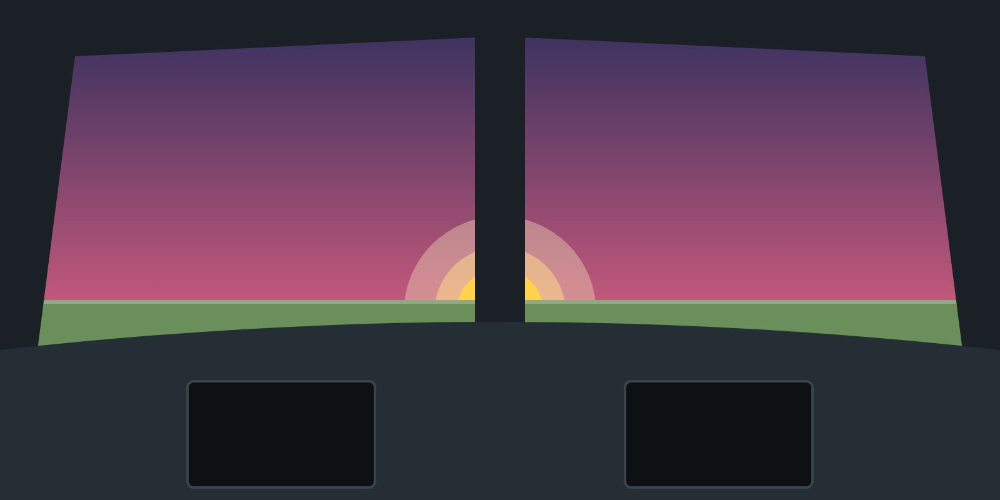

Enter the crew, the number of legs and the first take-off time. The calculator applies the leg reduction, the WOCL reduction and the extension rules step by step, then draws the duty and rest on a timeline. Change the values and watch the result change.
Calculation tool for training, based on the Algerian regulation as taught in this course. It does not replace the OM A FTL chapter or the crew planning system; where rules differ, the most restrictive applies.
Two pilots, 6 legs, take-off 09:00, check-in 08:00. Maximum DTP?
Answer: C. 13 h − 4 × 30 min = 11 h; no WOCL in the duty.
Training material only. It does not replace the Aircraft Flight Manual, FCOM, QRH, MEL or the Domestic Airlines Operations Manual, which always take precedence.